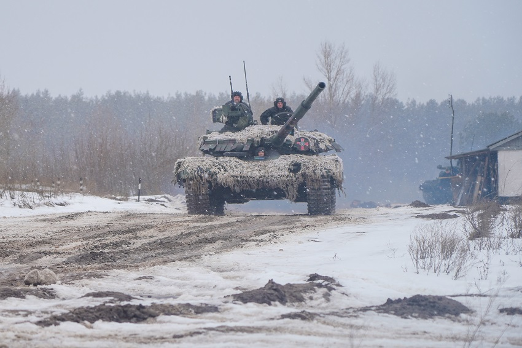
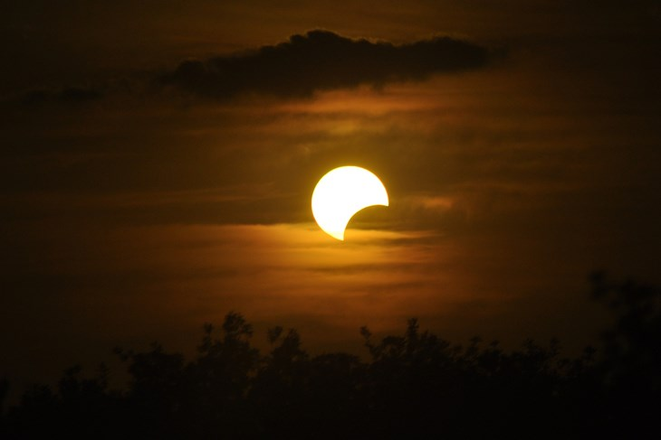
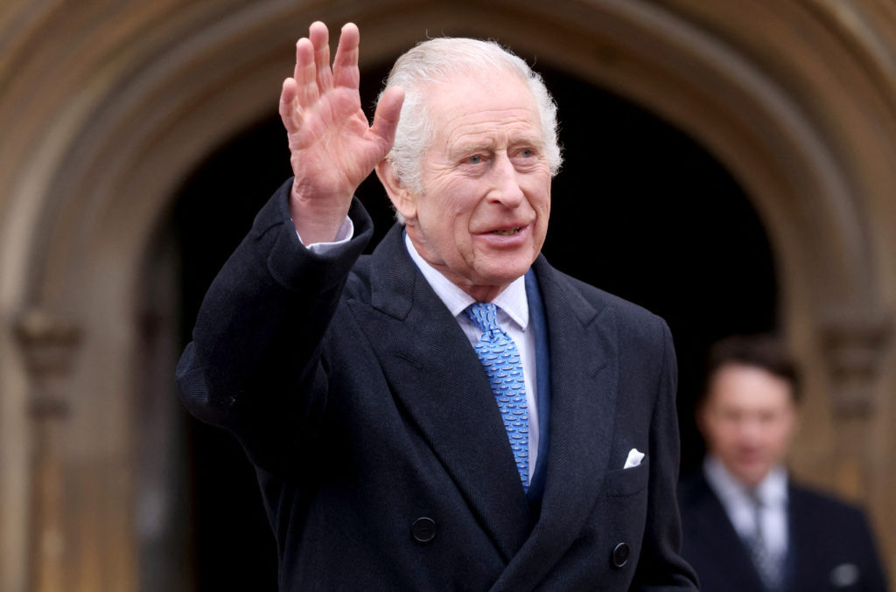

HRVATSKA
Rat u Ukrajini neće skoro završiti

Sagledavanje rata u Ukrajini vuče određene repove iz davnih 60-ih godina prošlog stoljeća. Krajem 50-ih i početkom 60-ih, Amerika je počela gomilati zalihe lakog alkalnog metala - litija. Međutim, borba za crno zlato potisnula je litij ili kako ga zovu bijelo zlato u drugi plan. Ekspanzijom upotrebe mikročipova i provodnika, litij dolazi u prvi plan. Tada na svjetskoj razini raste potražnja za tim metalom. Pošto su svjetske zalihe litija uglavnom pod kontrolom Amerike te slobodno rečeno i NATO-a, dolazi do preplitanja ekonomskih, vojnih i političkih strateških interesa...
Agresija na Ukrajinu također ima u pozadini razlog koji se zove litij, ali i ostale rude, obzirom je područje Donjecka i Luganska poznato po rudnom bogatstvu. Najveće nalazište litija je otkriveno upravo u Mariupolju, gradu razrušenom kao hrvatski Vukovar. Tako da ta poveznica između ova dva rata ima smisla, pogotovo kada se uzme u obzir, okupirani teritorij.
Ova teška situacija u Ukrajini, uvjetovana je i ostatkom ostataka političkog kadra proruskog predsjednika Janukoviča, koji su obnašali određene funkcije u državnom vrhu ukrajinske vlade i ministarstava. Pogotovo se to pokazalo na samom početku rata, kada su zbog izdaje pojedini gradovi i mjesta predavani u ruske ruke bez ispaljenog metka. Osim toga šefovi, direktori, upravitelji, proruski orijentirani članovi parlamenta, masovno su bježali s ogromnim svotama novca i dragog kamenja. Tako je supruga, člana parlamenta uhvaćena na mađarskoj granici sa 28 milijuna eura, dok je ukrajinski šef obavještajne službe uhićen na makedonsko-srpskoj sa 2 milijuna eura i određenom količinom dijamanata. O ostalim sitnim lokalnim političarima i gradonačelnicima, te pojedinim zapovjednicima da i ne pričamo.
Pomracina mjeseca ove godine

Milioni ljudi okupili su se kako bi posmatrali rijetko potpuno pomračenje koja prekriva sjevernoamerički kontinent, od Meksika do Kanade preko Sjedinjenih Američkih Država, kada je taj spektakularni nebeski događaj dan privremeno pretvorio u mrak.
U gradovima redom povici zadivljene gomile pratili su NASA-in videoprijenos uživo, emitiran s više lokacija duž putanje pomračenja, prenosi Hina, pozivajući se na AFP.
Samo u SAD-u više od 30 miliona ljudi živi na području gdje je predviđeno pomračenje, koje bi trebalo trajati samo nekoliko minuta, navodi američka svemirska agencija.
Događaj je započeo na pacifičkoj obali Meksika u 20:07 po srednjoevropskom vremenu. Meksički predsjednik Andres Manuel Lopez Obrador u obalnom je gradu Mazatlanu uživao u “nezaboravnom danu”.
Putanja je zatim počela prelaziti prvu od zahvaćenih 15 američkih saveznih država, od Teksasa do Mainea, nakon čega je krenula prema istočnoj Kanadi, gdje će završiti svoj put. Ukupno bi Mjesečeva sjena trebala prijeći preko Amerike u oko 90 minuta.
Događaj također predstavlja ekonomsku priliku za mnoge turističke regije, kao i za naučnike koji proučavaju Sunce.
Britanski kralj Charles ima rak

Britanski kralj Charles ima rak, objavila je Buckinghamska palača. Dijagnoza je postavljena nedavno dok je Charles III bio na liječenju benigno proširene prostate..
“Naknadni dijagnostički testovi identificirali su oblik raka. Njegovo veličanstvo danas je započelo s redovitim tretmanima, a tijekom tog vremena liječnici su mu savjetovali da odgodi dužnosti u javnosti”, objavila je Buckinghamska palača.
“Njegovo veličanstvo odlučilo je podijeliti svoju dijagnozu kako bi spriječilo nagađanja i u nadi da će pomoći u razumijevanju javnosti za sve one diljem svijeta koji imaju rak”, dodaje se u priopćenju.
“Kralj je zahvalan svom medicinskom timu na brzoj intervenciji, koja je bila moguća zahvaljujući njegovom nedavnom bolničkom zahvatu. Ostaje potpuno pozitivan u pogledu svog liječenja i raduje se povratku na punu javnu dužnost što je prije moguće”, objavila je još Buckinghamska palača.
Buckinghamska palača sredinom siječnja je objavila da će 75-godišnji Charles ići na operaciju zbog benignog stanja koje je često među muškarcima starijima od pedeset. Charlesova supruga kraljica Camilla je uoči operacije rekla da je Charles „dobro” i da se „raduje vratiti na posao”.